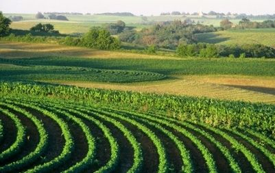
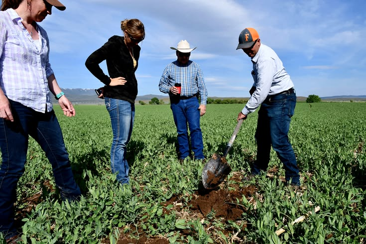
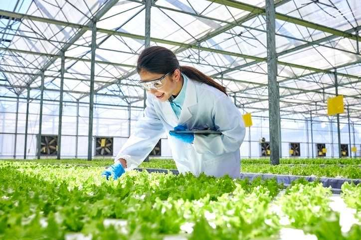
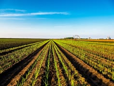
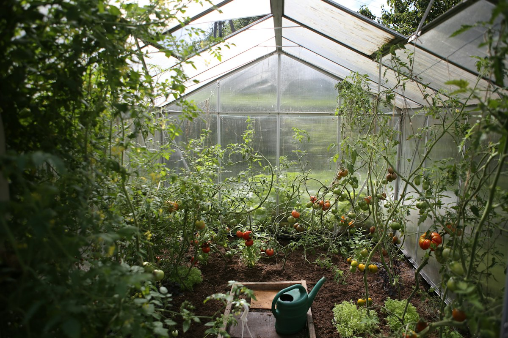

Midwest Corn & Grain Belt

Direct channels for specimen dispatch, biological farm audits, and pasture transitions.
Senior soil scientists reply within 24 business hours.
Regional laboratories providing cold-chain specimen intake and localized field support.



Standardized cold-chain core sampling protocols to preserve live microbial biomes.
Extract 0-15cm topsoil and 15-30cm subsoil layers using GPS-tagged stainless probes.
Store crumb aggregates in microporous bags to keep fungal hyphae intact.
Pack with insulated gel packs to stabilize microbial respiration during transit.
Specimens undergo direct optical microscopy and spectroscopic carbon assays upon receipt.

Licensed agronomists and grazing specialists ready for immediate deployment.